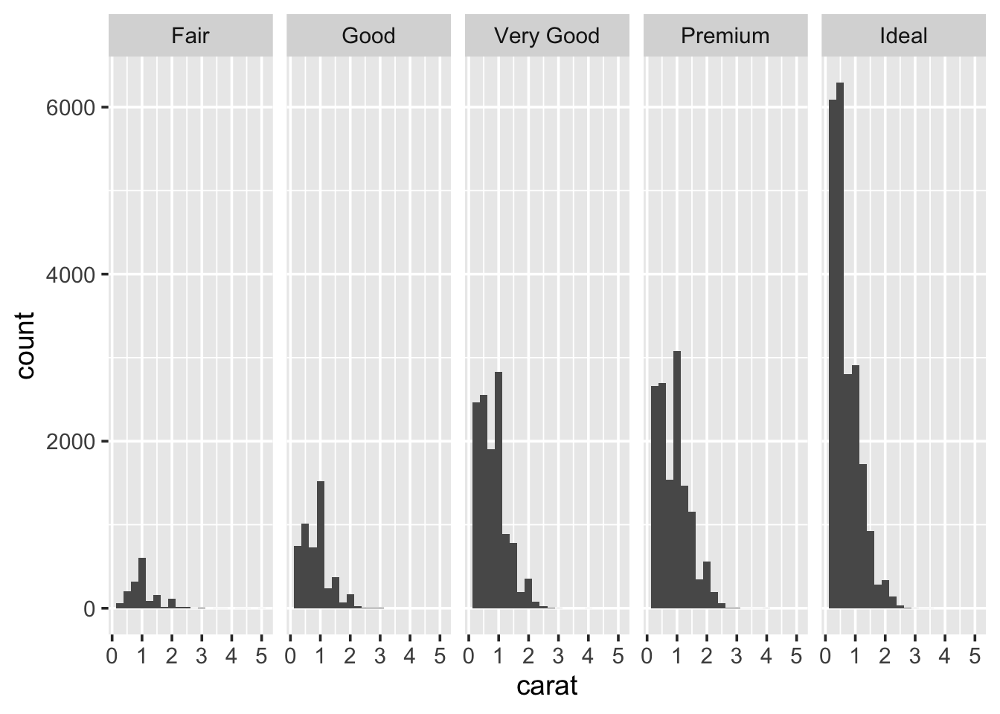
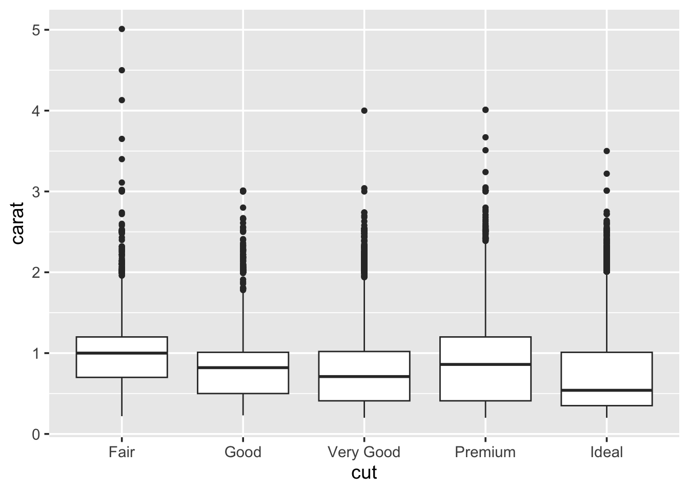
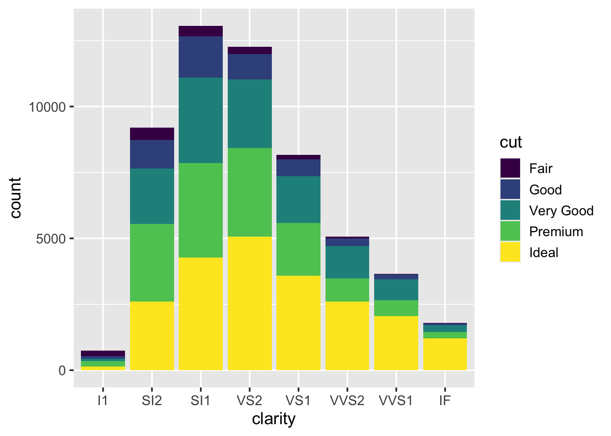
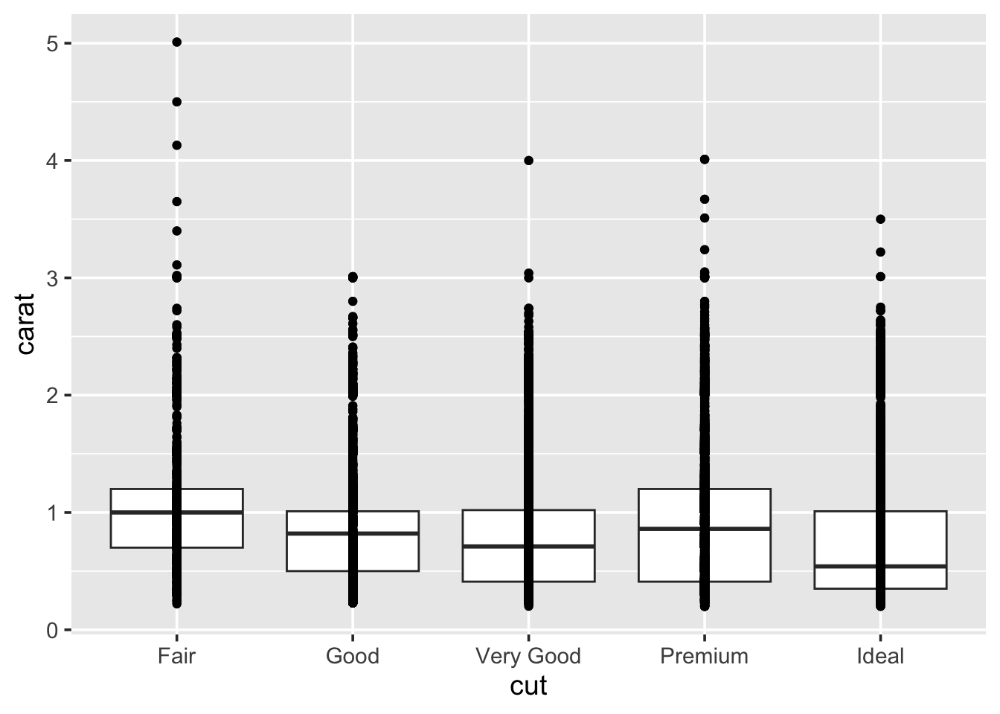
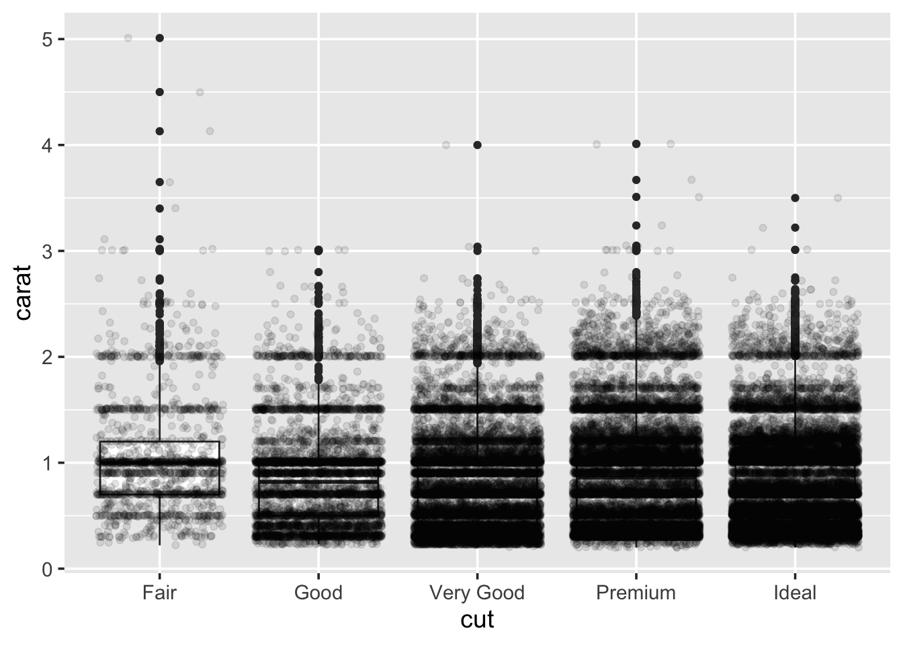
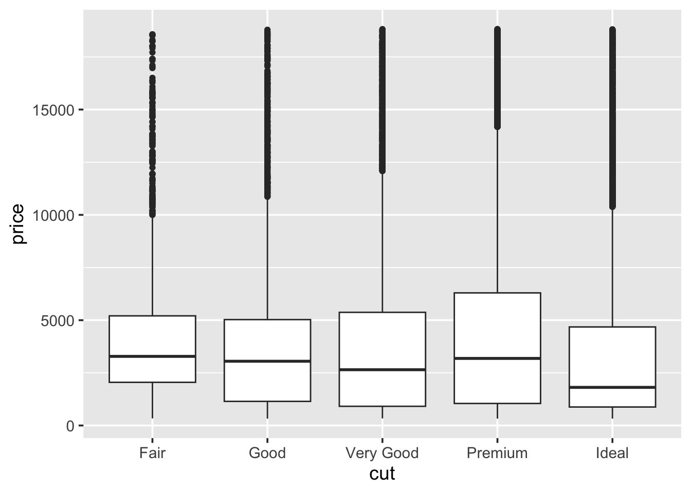

1 Data manipulation and plotting in R
1.1 Before getting started
- Revise the Getting Help section 0.4, and all the Summary subsections (0.3.4, 0.5.5, 0.7.3) from previous chapter.
- Create a new R script to save the code you write for this chapter.
- The purpose of this chapter is to allow you to practice importing,
manipulating, and exporting data. As well as introduce you to some
packages of the
tidyverse, like theggplot2package, a plotting system for R, based on the grammar of graphics, which tries to make it easy to produce complex multi-layered graphics.
1.2 Working with data in modern R
R developers have created functions and packages for almost every laborious task that stands between us and good quantitative scientific analysis. Data input, manipulation, and output is easy in R. It is just a matter of breaking down what needs to be done into small achievable tasks, and knowing the right functions.
R has changed a lot over the recent years, including more and more tools
for fast data manipulation, exploration, analysis and plotting. In
particular, we will be working a lot with the tidyverse packages. This
is a collection of R packages designed for data science.
Figure 1.1: In ‘Spiderman: Into the Tidyverse’ a young Miles Morales follows his dad’s advice, and never gets bitten by a radioactive spider, masters R programming, graduates from a data science programme, and gets hired in a Fortune 500 consultancy company.
The tidyverse includes a wide range of functions for modern data
manipulation, visualization, and analysis. Some of the core packages in
the tidyverse include ggplot2 for data visualization, dplyr for
data manipulation, and tidyr for data cleaning. By using these
packages together, you can efficiently import, clean, manipulate,
visualize, and analyze your data in a consistent and reproducible
manner. This makes the tidyverse a powerful tool for modern data
science, and for this reason I heavily encourage you to use its
functions and packages for this entire module and for your future
analyses.
To install the tidyverse, run:
And to load the package:
You only need to install a package once. But you have to load all the
packages you want to use at the start of every session. For this reason,
make sure all library(...) commands sit at the top of your script.
In the previous chapter, we learned how to use functions. One of the
things introduced in the tidyverse package, is the pipe operator, that
allows you to pass the output of one function to another function as the
first argument. This operator is written as %>% and is used to express
a sequence of multiple operations in a more readable and intuitive way.
For example, if we want to compute the natural logarithm of the sum of the first 10 natural numbers, \(\ln(1 + 2+ 3+ ... + 10)\), this is:
## [1] 4.007333In this example, we start with a vector x containing the numbers from
1 to 10. We then use the pipe operator to pass this vector to the
sum() function, which calculates the sum of all elements in the
vector. The result of this operation (55) is then passed to the log()
function, which calculates the natural logarithm of the input.
This code is equivalent to writing:
## [1] 4.007333As you can see, using the pipe operator allows us to express the sequence of operations in a more readable and intuitive way. It can be particularly useful when working with complex data transformations, as it allows you to write code that closely matches the logical sequence of operations you have in mind.
Remember that the pipe takes the output on its left and passes it as
the first argument to the function on its right. For example, the
function log takes as first argument the number and as second argument
the base of our logarithm. If we want to compute the base-10 logarithm
instead of the natural logarithm, we can do this by changing the second
base argument after the piping:
## [1] 1.740363This code is equivalent to writing:
## [1] 1.7403631.2.1 Data frames
A data set that has been loaded into R, and is ready for analysis is normally stored by R in something called a data frame. A data frame can be thought of as a table of data where the columns are named vectors, with each vector containing a particular type of data (numeric, string, date, time). These columns are often called variables in statistics. With the rows of the data frame corresponding to individuals or a single observation across the variables.
If, in Chapter 0, the information you collected and calculated regarding gravity at the surfaces of the planets in our Solar System was stored as a data frame it would look like:
| planet | mass | radius | distance | gravity |
|---|---|---|---|---|
| Mercury | \(3.30 \times 10^{23}\) | \(2.440\times 10^6\) | \(0\) | \(3.70\) |
| Venus | \(4.87 \times 10^{24}\) | \(6.052\times 10^6\) | \(0\) | \(8.87\) |
| Earth | \(5.97 \times 10^{24}\) | \(6.371\times 10^6\) | \(0\) | \(9.80\) |
| Mars | \(6.42 \times 10^{23}\) | \(3.390\times 10^6\) | \(0\) | \(3.71\) |
| Jupiter | \(1.90 \times 10^{27}\) | \(6.991\times 10^7\) | \(0\) | \(24.79\) |
| Saturn | \(5.68 \times 10^{26}\) | \(5.823\times 10^7\) | \(0\) | \(10.44\) |
| Uranus | \(8.68 \times 10^{25}\) | \(2.536\times 10^7\) | \(0\) | \(8.69\) |
| Neptune | \(1.02 \times 10^{26}\) | \(2.462\times 10^7\) | \(0\) | \(11.15\) |
To begin building this directly in R, type out the following into a script and run it.
Note that if you have masses and radius already stored in vectors from
last week’s script then copy and paste these as appropriate. Reusing
your existing vectors from previous chapter to create the planets data
frame may look like this:
planet <- data.frame(
name = c("Mercury", "Venus", "Earth",
"Mars", "Jupiter", "Saturn",
"Uranus", "Neptune"),
mass = c(3.30 * 10^23, 4.87 * 10^24, 5.97 * 10^24,
6.42 * 10^23, 1.90 * 10^27, 5.68 * 10^26,
8.68 * 10^25, 1.02 * 10^26),
radius = c(2.440 * 10^6, 6.052 * 10^6, 6.371 * 10^6,
3.390 * 10^6, 6.991 * 10^7, 5.823 * 10^7,
2.536 * 10^7, 2.462 * 10^7)
)Check that planet really is a data.frame by typing:
## [1] "data.frame"In R, the class of objects is very important. The same function, for
example summary(), will perform differently depending upon the class
of the object. In computer programming, this is called “function
overloading”.
Type planet into the console, and it will display the contents of our
newly created data frame. Another way to see the contents, this time in
a spreadsheet type view, is to type:
To access the individual variables, we use the dollar syntax:
## [1] 3.30e+23 4.87e+24 5.97e+24 6.42e+23 1.90e+27 5.68e+26 8.68e+25 1.02e+26But we can also use square brackets to select the individual elements of the data frame:
## [1] "Mercury"## name mass radius
## 1 Mercury 3.3e+23 2440000## [1] "Mercury" "Venus" "Earth" "Mars" "Jupiter" "Saturn" "Uranus"
## [8] "Neptune"## name mass radius
## 1 Mercury 3.30e+23 2440000
## 2 Venus 4.87e+24 6052000
## 3 Earth 5.97e+24 6371000Absolute referencing like this is a bad idea. If the order of your columns change, you may be referring to different columns than you thought you where, likewise for rows. By using the dollar syntax, we are using the name of the column, rather than its location in the data frame. Plus it is easier to understand what is happening when you reread the code, as you will see.
If we wanted to calculate the volume of each planet, assuming planets are perfect spheres, we could use the equation for volume: \[ V = \frac{4}{3} \pi r^3, \] where \(r\) is the planet radius:
## [1] 6.084965e+19 9.285074e+20 1.083207e+21 1.631878e+20 1.431220e+24
## [6] 8.270447e+23 6.831819e+22 6.251047e+22Since we created this data frame, we already know the names of the
variable that are contained within it. But say we load a foreign data
set, how do we know what the variables are called? Outside R, we hope
that this data set also has good documentation, such as a PDF or website
telling you all the details you could ever want know. But within R, we
can get a list of the attributes of an object by using the names()
function:
## [1] "name" "mass" "radius"As well as using names(), it is also good practice to check the size
of the data frame.
We previously used length() to determine how many elements were in a
vector. Since, a data frame is two-dimensional, we instead use nrow()
and ncol() to determine the number of rows and columns respectively:
## [1] 8## [1] 3## [1] 8 3Ultimately, there is a great function that contains and print all these
information for your in a convenient format, str. This will print also
the class of the columns and the first few observations, and can be a
pretty useful function to have a first look at a new data frame:
## 'data.frame': 8 obs. of 3 variables:
## $ name : chr "Mercury" "Venus" "Earth" "Mars" ...
## $ mass : num 3.30e+23 4.87e+24 5.97e+24 6.42e+23 1.90e+27 ...
## $ radius: num 2440000 6052000 6371000 3390000 69910000 ...Using the dollar syntax we can create new variables:
Though there are more elegant ways of creating new variables, as you will see in the next section.
1.2.2 Basic manipulation
The easiest way to add distance, and gravity as variables to our
data frame is to make use of the dplyr package. Before we can load
this package from the R library, you will need to install it:
Add library(dplyr) to yours now and run it. Alternatively, we can load
the tidyverse via the command: library(tidyverse), and this will
automatically load dplyr.
Loading the dplyr package gives us access to these functions for data
manipulation:
filter()Focus on a subset of the rows of a data frame.arrange()Reorders the rows in the data frame.select()Allows you to zoom in on a useful number of columns.mutate()Easily add new columns that are functions of existing ones.
The first argument to each of these functions is always the data frame
we wish to work on, the subsequent arguments are the variables we wish
to work with. These allows the function to be used in conjunction with
the pipe operator %>%.
For example, to focus on big planets i.e. those that have radius greater
than \(10^7\)m we use the filter() function:
big_planets <- planet %>% filter(radius > 10^7)
# big_planets <- filter(planet, radius > 10^7) # alternatively, without pipe
big_planets## name mass radius contains_humans radius_km
## 1 Jupiter 1.90e+27 69910000 0 69910
## 2 Saturn 5.68e+26 58230000 0 58230
## 3 Uranus 8.68e+25 25360000 0 25360
## 4 Neptune 1.02e+26 24620000 0 24620To arrange the planets by increasing size, we using the arrange()
function:
## name mass radius contains_humans radius_km
## 1 Mercury 3.30e+23 2440000 0 2440
## 2 Mars 6.42e+23 3390000 0 3390
## 3 Venus 4.87e+24 6052000 0 6052
## 4 Earth 5.97e+24 6371000 1 6371
## 5 Neptune 1.02e+26 24620000 0 24620
## 6 Uranus 8.68e+25 25360000 0 25360
## 7 Saturn 5.68e+26 58230000 0 58230
## 8 Jupiter 1.90e+27 69910000 0 69910## name mass radius contains_humans radius_km
## 1 Jupiter 1.90e+27 69910000 0 69910
## 2 Saturn 5.68e+26 58230000 0 58230
## 3 Uranus 8.68e+25 25360000 0 25360
## 4 Neptune 1.02e+26 24620000 0 24620
## 5 Earth 5.97e+24 6371000 1 6371
## 6 Venus 4.87e+24 6052000 0 6052
## 7 Mars 6.42e+23 3390000 0 3390
## 8 Mercury 3.30e+23 2440000 0 2440# alternatively, without pipe
# arrange(planet, radius) # increasing by default
# arrange(planet, desc(radius)) # decreasingIf we want to store the data in this newly rearranged form then:
planet <- planet %>%
arrange(desc(radius))
# alternatively, without pipe
# planet <- arrange(planet, desc(radius))If we wanted to remove the column of planet names, effectively
anonymising them, we would use the select() function to specify the
columns we do want to keep.
## mass radius
## 1 1.90e+27 69910000
## 2 5.68e+26 58230000
## 3 8.68e+25 25360000
## 4 1.02e+26 24620000
## 5 5.97e+24 6371000
## 6 4.87e+24 6052000
## 7 6.42e+23 3390000
## 8 3.30e+23 2440000In order to carry on with our gravity calculations, we need to add a
distance column, use mutate() to do this. Using mutate(), we can
actually add the distance and gravity variables in one call:
calc_gravity <- function(distance = 0, mass = 5.9736 * 10^24, radius = 6.371 * 10^6) {
# constant
G <- 6.6728 * 10^-11
# calculation
r <- radius + distance
a <- G * mass / r^2
return(a)
}
planet <- planet %>% mutate(distance = 0,
gravity = calc_gravity(distance, mass, radius))When passing variable names to cal_gravity(), mutate() will check if
these names correspond to variables inside the specified data frame.
This means we do not have to repeatedly use the dollar syntax mentioned
earlier to access the needed variables. Which makes our code look clean
and easy to read (providing you know how mutate works).
If there were no variables inside the data frame matching these names,
mutate() would then search the local environment. Finally, stating an
error if it could not find any object matching the name specified.
Check what the data contained with planet now looks like.
Thanks to the power of the pipe operator %>%, we can do all these
operations in one go by piping the above functions together:
planet %>%
filter(radius > 10^7) %>%
mutate(distance = 0,
gravity = calc_gravity(distance, mass, radius)) %>%
arrange(desc(mass)) %>%
select(name, mass)## name mass
## 1 Jupiter 1.90e+27
## 2 Saturn 5.68e+26
## 3 Neptune 1.02e+26
## 4 Uranus 8.68e+25In one go, we filtered the planet data frame, added distance and gravity columns, arranged rows by mass and kept only name and mass columns. The power of modern R!
Next, using the functions and the pipe operator, arrange the rows by
increasing gravity, and select only the planet name and gravity
columns. Where does Earth rank among the Solar System? Are there any
other planets were we would either (a) not be crushed to death, nor (b)
float off into space if we fell over?
1.2.3 Combinining Dataframes
Combining data frames means bringing two or more data frames together into a single data frame. There are several ways to do this, depending on how you want to combine the data, like concatenating, and joining.
Let us explore the difference between the two through a real example. We start by selecting few columns from the planet data set that we have created so far.
## name mass radius contains_humans
## 1 Jupiter 1.90e+27 69910000 0
## 2 Saturn 5.68e+26 58230000 0
## 3 Uranus 8.68e+25 25360000 0
## 4 Neptune 1.02e+26 24620000 0
## 5 Earth 5.97e+24 6371000 1
## 6 Venus 4.87e+24 6052000 0
## 7 Mars 6.42e+23 3390000 0
## 8 Mercury 3.30e+23 2440000 0Say that we now have a new data frame with some additional (exo)planets, fresh from the telescopes, which shares common features with our existing dataset:
exoplanet <- data.frame(
name = c("Kepler-186f", "Kepler-62f", "Kepler-438b"),
mass = c(1.9 * 10^23, 3.32 * 10^23, 2.64 * 10^23),
radius = c(1.17 * 10^6, 1.41 * 10^6, 1.12 * 10^6)
)
exoplanet## name mass radius
## 1 Kepler-186f 1.90e+23 1170000
## 2 Kepler-62f 3.32e+23 1410000
## 3 Kepler-438b 2.64e+23 1120000Concatenating means to create a new data-frame by attaching new rows
to a data frame from a different one that shares the same columns. This
can be achieved with the bind_rows function, that takes as input any
number of data frames and essentially collates them together:
## name mass radius contains_humans
## 1 Jupiter 1.90e+27 69910000 0
## 2 Saturn 5.68e+26 58230000 0
## 3 Uranus 8.68e+25 25360000 0
## 4 Neptune 1.02e+26 24620000 0
## 5 Earth 5.97e+24 6371000 1
## 6 Venus 4.87e+24 6052000 0
## 7 Mars 6.42e+23 3390000 0
## 8 Mercury 3.30e+23 2440000 0
## 9 Kepler-186f 1.90e+23 1170000 NA
## 10 Kepler-62f 3.32e+23 1410000 NA
## 11 Kepler-438b 2.64e+23 1120000 NAWe can see how our data frame is now made of 11 rows: We attached the
3 new planets at the end. You will notice that bind_rows assigns NA to
those elements of columns that are not shared between the two data
frames: See what happened over the contain_humans column!
Say that for some strange occurrence you get cryogenically frozen and wake up in the year 3000. You wake up in the Futurama universe and get assigned a job at the Lancaster branch of the Planet Express (somehow they still need data scientists).
You now have a new data-frame to work with, with some new planets, species and delivery due-dates:
futurama_planet <- data.frame(
name = c("Omicron Persei 8", "V-GINY", "Mars", "Neutral Planet", "Earth", "Decapod 10", "Amphibios 9", "Near Death Star"),
species = c("Omicronians", NA, "Native Martians", "Neutral People", "Humans", "Decapodians", "Amphibiosans", NA),
delivery_due = c("3001/01/03", "3005/04/22", "3003/03/05", "3011/11/13", "3001/02/02", "3001/01/13", "3002/01/13", "3007/07/25")
)
futurama_planet## name species delivery_due
## 1 Omicron Persei 8 Omicronians 3001/01/03
## 2 V-GINY <NA> 3005/04/22
## 3 Mars Native Martians 3003/03/05
## 4 Neutral Planet Neutral People 3011/11/13
## 5 Earth Humans 3001/02/02
## 6 Decapod 10 Decapodians 3001/01/13
## 7 Amphibios 9 Amphibiosans 3002/01/13
## 8 Near Death Star <NA> 3007/07/25As you can see, this data set, apart from the column name, contains a
completely different set of features, but they share some observations:
both the planets “Earth” and “Mars”. How can we combine information from
the two? In this case, it might make more sense to combine data frames
by matching observations based on values in columns that are shared by
both, and join the non-shared columns. This is called a join
operation.
In dplyr we have several functions to join data frames. One of these
functions is the full_join() function, which combines all rows from
both tables, matching observations based on the values of one or more
shared columns (called keys).
In our example, we can combine the two data frames by joining them using
the name column as our key:
## name mass radius contains_humans species
## 1 Jupiter 1.90e+27 69910000 0 <NA>
## 2 Saturn 5.68e+26 58230000 0 <NA>
## 3 Uranus 8.68e+25 25360000 0 <NA>
## 4 Neptune 1.02e+26 24620000 0 <NA>
## 5 Earth 5.97e+24 6371000 1 Humans
## 6 Venus 4.87e+24 6052000 0 <NA>
## 7 Mars 6.42e+23 3390000 0 Native Martians
## 8 Mercury 3.30e+23 2440000 0 <NA>
## 9 Kepler-186f 1.90e+23 1170000 NA <NA>
## 10 Kepler-62f 3.32e+23 1410000 NA <NA>
## 11 Kepler-438b 2.64e+23 1120000 NA <NA>
## 12 Omicron Persei 8 NA NA NA Omicronians
## 13 V-GINY NA NA NA <NA>
## 14 Neutral Planet NA NA NA Neutral People
## 15 Decapod 10 NA NA NA Decapodians
## 16 Amphibios 9 NA NA NA Amphibiosans
## 17 Near Death Star NA NA NA <NA>
## delivery_due
## 1 <NA>
## 2 <NA>
## 3 <NA>
## 4 <NA>
## 5 3001/02/02
## 6 <NA>
## 7 3003/03/05
## 8 <NA>
## 9 <NA>
## 10 <NA>
## 11 <NA>
## 12 3001/01/03
## 13 3005/04/22
## 14 3011/11/13
## 15 3001/01/13
## 16 3002/01/13
## 17 3007/07/25You can notice how the Earth and Mars observations have been matched! We
have now 17 rows in total, and we have added the information of the
native species and delivery-due to Earth and Mars. Again, where there
are miss-matching elements, we will find an NA value.
Additionally, note how all the values in the name column are unique! Join operations are perfect in joining dataframes where we have unique identifiers, like student ids or days.
Say we are only interested in real planets now, and we do not wish to
have all the information from the Futurama data set, but we would still
like to retrieve the information about the species and delivery date.
Another function is the left_join() function, which keeps all
observations in the first data frame (x) and adds columns from the
second data frame (y) to x, matching again observations based on the
keys.
## name mass radius contains_humans species delivery_due
## 1 Jupiter 1.90e+27 69910000 0 <NA> <NA>
## 2 Saturn 5.68e+26 58230000 0 <NA> <NA>
## 3 Uranus 8.68e+25 25360000 0 <NA> <NA>
## 4 Neptune 1.02e+26 24620000 0 <NA> <NA>
## 5 Earth 5.97e+24 6371000 1 Humans 3001/02/02
## 6 Venus 4.87e+24 6052000 0 <NA> <NA>
## 7 Mars 6.42e+23 3390000 0 Native Martians 3003/03/05
## 8 Mercury 3.30e+23 2440000 0 <NA> <NA>
## 9 Kepler-186f 1.90e+23 1170000 NA <NA> <NA>
## 10 Kepler-62f 3.32e+23 1410000 NA <NA> <NA>
## 11 Kepler-438b 2.64e+23 1120000 NA <NA> <NA>Note how we retained only the original 8 observations from the real
planets! Try to run right_join on the previous snippet, and see what
happens. What do we obtain?
1.2.4 Matrices
To take a bit of a side-step, I just want to explain a bit about matrices in R because they are similar to data frames but with a few restrictions. Though we will not be making use of matrices in this module, you will in the more-theoretical statistics modules.
The word matrix is a mathematical term for a two-dimensional array of numbers, with a vector being a one-dimensional array. To create a matrix, we can simply bind vectors together as columns:
## x y z
## [1,] 1 6 11
## [2,] 2 7 12
## [3,] 3 8 13
## [4,] 4 9 14
## [5,] 5 10 15Or we can create one directly, using the matrix() function:
## [,1] [,2] [,3]
## [1,] 1 2 3
## [2,] 4 5 6
## [3,] 7 8 9
## [4,] 10 11 12
## [5,] 13 14 15You can only access the data within a matrix using the square bracket notation. And, all the data in the matrix has to be of the same type. As a result of these restrictions you would not use a matrix to store data as information, but instead you would use matrices to perform algebraic calculations, such as matrix multiplication, or calculating the determinant of a matrix.
1.2.5 Exporting data
Much like when we create custom functions, data frames only exist in our
local environment. Which, again, means that when we quit R they will
disappear. A good way to export a data frame is to write it as a CSV
file to your H: drive. CSV stands for Comma Separated Values, and any
self-respecting data analysis software will be able to read a CSV file.
To write to a data frame to CSV from R, we make use of the write.csv()
function specifying the full file path including the file name and
extension:
To see why we use the argument row.names = FALSE, set it to TRUE,
rerun the command, and see if you can spot the difference in the file.
Where are these row names coming from? Type row.names(planet) into the
console. Row names should just be the equivalent of row indexes i.e.
nothing of actual value. Therefore they do not need storing.
## if you are working in an R Markdown, this will save the file as "planet.csv"
# to the same path where your R Markdown script is located. This is the reproducible way.
write.csv(planet, file = "planet.csv", row.names = FALSE)
## if you are working in a script:
# write.csv(planet, file = "H:/My Awesome R Scripts/planet.csv", row.names = FALSE) # replace by actual path
### DO NOT INCLUDE ABSOLUTE PATHS IN R MARKDOWNS ###This will write a CSV file to the path you have specified. If you are working in R Markdown, given that the working directory defaults to the location of the Markdown file, you can just specify a filename and this will save the CSV to the same location where your R Markdown is with your chosen filename. This is the reproducible way. Now, locate the file, right click and choose to open with a text editor, such as Notepad++. The way the data is laid out in the file should follow the same structure as it appeared in the data frame, but the efficient formatting makes it difficult to read with your human eyes. One thing is clear though, and that is the first row contains the variable names, with the data existing in the remaining rows. If you double-click the CSV file, Excel will probably try to open it, you should try this. Excel is smart enough that will have automatically recognised the format of the CSV file.
Other general data file formats exist, these involve separating values using different methods (tabs or whitespace), see Table 1.2. To work out how to use these write functions and discover how they write your data to a file, check their respective help pages, and open up the resulting file with a text editor, like you did with the CSVs.
| Name | Extension | Write function | Read function |
|---|---|---|---|
| CSV | .csv |
write.csv() |
read.csv() |
| Tab-delimited | .tab |
write.table() |
read.table() |
| Fixed Width Format | .fwf |
read.fwf() |
The base R packages do not have a write function for FWF, this is because the other two methods are considered sufficient.
1.2.6 Importing data
As you can see, while we have write.*() functions we also have equal
and opposite read.*() functions. Try importing the planet.csv file
that you produced:
Take a look inside dat, if it looks the same as your planet data
frame, then good job!
In general, before you import a data set, try to inspect the file using
a text editor to confirm the structure. Once you have identified the
structure, and if it happens to be something standard, like a CSV, or
tab-delimited file, then go ahead and use those respective functions to
read it in. But in the event of it being something a bit more special,
like colon separated values, you can setup read.table() to import the
data correctly. The read.table() function is considered the Swiss Army
knife of the read.*() family6. To see all of the possible arguments
for read.table() check its help page.
1.2.7 Using a working directory
Previously, when importing and exporting data sets, we said we had to specify a complete file path such as:
filename <- "H:/My Awesome R Scripts/planet.csv" # again, replace by actual path
write.csv(planet, file = filename, row.names = FALSE)However, R has something called a working directory. If set, anything we save, such as data sets and plots, will be saved to this location7.
Now, of course, if we specify absolute paths, like the one above then we are effectively overriding this feature.
To get the path of your current working directory type into the :
You can change this, by setting it to a different directory using using
setwd(), for example:
If I were to run the following command, the filename is now considered
relative, i.e. it does not tell R exactly where to save the data. In
this case, R assumes it should use the working directory.
So, by setting the working directory at the start of a script, we make
our importing-and-exporting lives easier, because we do not have to
verbosely state where we want to save something every single time. Also,
if future you ever needs to open a script to see where it is saving
everything, then this will be obvious from the setwd() near the top of
the script.
A relative file path can include folders:
This assumes that there is folder called “data” in my working directory. R will complain if it does not exist.
One final thing about why it is good to use relative paths and “working directories” is that it makes your code more portable. By using relative references, you can bundle your code and data together, allowing someone else to run and modify it on their own system.
It is worth noting that when writing an R Markdown file (.Rmd) RStudio assumes that the working directory is the directory that the .Rmd file is saved in.
1.2.8 Summary
- Data frames are the standard object for storing data in R. Each column in a data frame is considered to be a variable, such that the type of data it contains (strings vs numbers) can differ from the other columns. Accessing data can be done using both the dollar syntax and the square-bracket syntax:
## [1] "Jupiter" "Saturn" "Uranus" "Neptune" "Earth" "Venus" "Mars"
## [8] "Mercury"## [1] "Jupiter" "Saturn"## [1] "Jupiter" "Saturn" "Uranus" "Neptune" "Earth" "Venus" "Mars"
## [8] "Mercury"## [1] "Jupiter" "Saturn"- To manipulate data on a much larger and general scale, it is more
efficient to use the functions provided by the
dplyrpackage, namely:
| Function | Action |
|---|---|
filter() |
Focus on a subset of the rows of a data frame |
arrange() |
Reorders the rows in the data frame |
select() |
Allows you to zoom in on a useful number of columns |
mutate() |
Add new columns that are functions of existing ones |
The first argument to each of these functions is always the data frame we wish to work on. With the subsequent arguments involving the names of the variables we wish to operate on or with.
For the reason above, it is possible to pipe these functions via the piping operator
%>%, to perform a long series of data manipulations operations in one go.To export data use either the
write.table()orwrite.csv()functions. Make sure to set the parameterrow.names=FALSE. Check the help pages for each for more details.Both have these sister functions;
read.table()andread.csv(). Withread.table()having lots of options that can be modified to read in any structured data file.R has a working directory, use
getwd()to find out what it currently is. And usesetwd()to change it. Equally, there is a menu in RStudio that allows you to do the same thing.Working directories are good, as they allow you to use relative paths, rather than absolute ones.
# relative file names
setwd("H:/Awesome R Scripts/")
write.table(planet, file = "planet.csv", row.names = FALSE)
write.table(letters, file = "letters.csv", row.names = FALSE)
# absolute file names
write.table(planet, file = "H:/Awesome R Scripts/planet.csv", row.names = FALSE)
write.table(letters, file = "H:/Awesome R Scripts/letters.csv", row.names = FALSE)- It can be a good idea to set your working directory at the top of your script.
1.2.9 Exercises
Now complete the following exercises:
- Working on your
planetdata frame:
- Add the volumes for each planet as new variable using the dollar syntax.
- Using
mutate()add variables with the following definitions:
* `mass_earths` The mass of a planet as a proportion of the mass of Earth.
* `volume_earths` Express `volume` as a proportion of Earth's volume.
* `gravity_earths` Express `gravity` as a proportion of Earth's gravity.- Create a new data frame which only contains the names of the planets, and each of the measurements expressed as a proportion of Earth.8 Inspect this data frame for information on the other planets relative to Earth.
- Make sure you are familiar with writing and reading from data files that are Tab-delimitted or CSV. For each file format:
- Look-up the help page, see the arguments needed to use the
particular
write.*()function. - Store the
planetdata frame with the appropriate file extension. - Can you open it in Excel?
- Can you read it back into R?
1.3 Data Types
To determine the data type of an object use the class() function. Type
in the :
## [1] "numeric"## [1] "character"## [1] "character"## [1] "logical"More generally, class() can be applied to any object:
## [1] "data.frame"## [1] "function"When you start getting unexpected errors, class() can be used to
sanity-check your objects: Is planet actually a data frame?
1.3.1 Numeric
Decimal values are stored as numeric data in R. And it is the default
computational data type. If we assign a decimal value to a variable x
as follows, x will be of type numeric:
## [1] "numeric"Furthermore, even if we assign a vector of integers to a variable k, R
will still store it as numeric:
## [1] "numeric"1.3.2 Factors
It is common in statistical data to have categorical variables, indicating some subdivision of the data, such as social class, primary diagnosis, tumour stage, gender, species, etc. Such variables are stored in data files often as strings indicating their actual value, though abbreviations may be used; “m” for male, and “f” for female. But, due to the actual number of observations, it may be more sensible to store the categorical data using numerical codes; 1 for male, 2 for female. With their meaningful names then being store in the documentation for the data.
Regardless of how they are originally stored, in R they should be
converted to factors. A factor is a data structure which stores the
categorical data as numerical codes, but has labels which make the
codes meaningful. For example, say we have a pain variable that
records what level of pain our patients are in using a four-point scale:
pain <- c(0, 1, 3, 2, 2, 1, 1, 3)
pain_f <- factor(pain, levels = 0:3,
labels = c("none", "mild", "medium", "severe"))
pain_f## [1] none mild severe medium medium mild mild severe
## Levels: none mild medium severe## [1] "none" "mild" "severe" "medium" "medium" "mild" "mild" "severe"This factor data structure is so routinely used by data scientists,
that R will automatically convert strings to factors when creating a
data frame which includes using any of the read.*() functions. Hence
why, even though we originally specified the planet names as a vector of
strings, it is now being stored as a factor in R.
After the factor has been created, we can modify its levels, either all at once or individually:
## [1] "none" "mild" "medium" "severe"# change all levels
levels(pain_f) <- c("none", "uncomfortable", "unpleasant", "agonising")
levels(pain_f)## [1] "none" "uncomfortable" "unpleasant" "agonising"## [1] "absent" "uncomfortable" "unpleasant" "agonising"1.3.3 Data and time
A date or timestamp typically looks like: 2014-10-09 01:45:00
This follows the format of YYYY-MM-DD hh:mm:ss. But there are a number
of other ways of laying out the same information; Americans like to
switch the month and day around; the time-part may occur before the date
part; we may not have seconds; we may use a letter abbreviation for
month. The lack of consistency of how people write timestamps can make
them a headache to deal with, especially when we are merging data from
two different sources.
By default, R will make no attempt to parse a date or timestamp as such.
Instead, R will silently read them as strings, and thus will be turned
into a factor. This is not useful, and we will cover how to override
this behaviour using the lubridate package in Chapter 2,
where we deal with parsing differently formatted timestamps, and the
tedious issue of time zones.
1.3.4 Exercises
- Mercury, Venus, Earth and Mars are called the terrestrial planets, as they are primarily composed of rock and metal. Jupiter and Saturn, are composed mainly of hydrogen and helium, thus are referred to as gas giants. Finally, Uranus and Neptune, are composed largely of substances with relatively high melting points, thus are often referred to separately as ice giants.
Create a factor variable, called type, in the planet data frame with
these categories. Make sure that each planet has the correct label.
Convert the
contains_humansvariable insideplanetto a factor with0labelled as"no", and1as"yes".See what happens when you convert a factor back to numeric using the
as.numeric()function, and how it differs fromas.character().
1.4 Logical comparisons and Boolean operations
We have seen that setting up scientific information in the form of one or more vectors is often convenient for performing additional calculations as well as plotting. R is designed around the idea and use of vectors. Data frames are essentially a collection of vectors, but with extra useful functionality. Furthermore, we have seen that R comes with tools for extracting and manipulating the information in vectors and data frames.
In practice, we often have to extract data that satisfy a certain criteria, such as all the data for females, or all those with a particular disease. This is when we start to make statements involving logical comparisons.
1.4.1 Logical comparisons
We have previously seen, that we can select parts of a vector using indexing:
## [1] "Saturn" "Uranus" "Neptune" "Earth"But if we want to specifically look at particular type of planet, then
without having to calculate the specific numerical index we can use
filter:
## name mass radius contains_humans radius_km distance gravity
## 1 Uranus 8.68e+25 25360000 0 25360 0 9.005946
## 2 Neptune 1.02e+26 24620000 0 24620 0 11.228770
## type
## 1 ice giant
## 2 ice giantWhere == means “equal to”, see Table 1.3 for other
operators. In fact, you can practically read that last line of code as a
sentence; “Filter the rows in the planet data frame such that the
type is equal to ice giant”.
| Symbol | Comparison |
|---|---|
< |
Less than |
> |
Greater than |
<= |
Less than or equal to |
>= |
Greater than or equal to |
== |
Equal to |
!= |
Not equal to |
Note that when you see a logical comparisons, such as
type == "ice giant", R is actually returning a vector of TRUE and
FALSE values:
## [1] FALSE FALSE TRUE TRUE FALSE FALSE FALSE FALSEThis is then being used to filter the data frame, returning only the
rows that correspond to TRUE.
1.4.2 Boolean operations
The real fun begins when you start combining logical comparisons with Boolean operations.
| Symbol | Phrase |
|---|---|
& |
And (ampersand) |
| |
Or (vertical bar) |
! |
Not or negation (exclamation) |
The operators & and | connect two logical comparisons and return
TRUE or FALSE depending on the joint truth or falsehood of the two
logical comparisons. We also use brackets to help visually separate out
the different conditions.
## name mass radius contains_humans radius_km distance gravity
## 1 Earth 5.97e+24 6371000 1 6371 0 9.814479
## 2 Venus 4.87e+24 6052000 0 6052 0 8.872362
## type
## 1 terrestrial
## 2 terrestrial## name mass radius contains_humans radius_km distance gravity
## 1 Jupiter 1.90e+27 69910000 0 69910 0 25.940784
## 2 Saturn 5.68e+26 58230000 0 58230 0 11.177968
## 3 Uranus 8.68e+25 25360000 0 25360 0 9.005946
## 4 Neptune 1.02e+26 24620000 0 24620 0 11.228770
## 5 Earth 5.97e+24 6371000 1 6371 0 9.814479
## 6 Venus 4.87e+24 6052000 0 6052 0 8.872362
## 7 Mars 6.42e+23 3390000 0 3390 0 3.727724
## 8 Mercury 3.30e+23 2440000 0 2440 0 3.698643
## type
## 1 gas giant
## 2 gas giant
## 3 ice giant
## 4 ice giant
## 5 terrestrial
## 6 terrestrial
## 7 terrestrial
## 8 terrestrialThe & returns TRUE only when both of the comparisons are true.
While | returns TRUE if at least one of the comparisons is true.
1.4.3 Dealing with NAs
In R, NA is a special value that represents missing or undefined data.
We have seen an example of this on the dataset we joined earlier,
following the left_join. For instance, let’s recall the variable
contain_humans:
## [1] 0 0 0 0 1 0 0 0 NA NA NASay we want to fill in these values. It’s important to note that NA is
not equivalent to other values, including itself. This means that we
cannot use the equality operator == (or any other operator!) to test
and selecting for NA, as this comparison will return an NA:
## [1] NA NA NA NA NA NA NA NA NA NA NARStudio will even give us a warning! Instead, you need to use the
is.na() function:
## [1] FALSE FALSE FALSE FALSE FALSE FALSE FALSE FALSE TRUE TRUE TRUEThis will output a Boolean vector that we can now use for indexing
purposes. From here, you can fill NA values in several ways.
Using the standard R syntax:
# filling values with 0
left_joined_planets$contains_humans[is.na(left_joined_planets$contains_humans)] <- 0Or, with the mutate() function combined with ifelse() to replace
NA values:
# filling values with 0
left_joined_planets <- left_joined_planets %>%
mutate(contains_humans = ifelse(is.na(contains_humans), 0, contains_humans))Both would have achieved the same:
## [1] 0 0 0 0 1 0 0 0 0 0 0Despite being more verbose (yes I know) than native R, the mutate +
ifelse statement is quite a powerful statement as it allows for quick
selection and manipulation for even more sophisticated operations. No
wonder the ifelse is so useful in good old Microsoft Excel.
1.5 Plots
It might seem to you that scientists have an obsession with quantification. Your impressions would be correct. To build reliable, reproducible results, scientists naturally seek to gather and record counts, measurements, and attributes of the phenomenon under observation. Data, the collective name for such counts, measurements, and attributes, are the lifeblood of science. Studying data with quantitative tools allows scientists to detect patterns, make predictions, and assess the reliability of current theory. Being able to visualise data is crucial to this endeavour. Even a small dataset is practically incomprehensible all by itself. Plotting data allows us to visualise the relationships we are interested in.
Visualisation can be used for two things; (a) for the computer to show the scientist what is happening in the data, and (b) for you to show other people. Graphs that fall into (a) tend to be produced quicker and dirtier than the graphs we produce for (b).
Finally, different types of graphs emphasise different aspects of the data and variables under study. Building a good graph therefore takes time and is often an iterative process.
1.5.1 Getting started
Before we begin, you should start a new R script, call it something like
chp-1-plots.R.
One more thing is that within RStudio you need to install a package:
If you are on a computer system where you need to install additional
packages in a specific folder you can use the lib = "filepath"
argument.
Once it has installed add library(ggplot2) to the top your new script.
This loads the package into your current R session.
You can see all the packages you have loaded in your session using:
Note, if you want to remove a package from your session type (do not do this now):
Also, if when you load in a package and it has a function with the same
name as another package that is already loaded in your R session, you
will get a warning that one of the function names masks the function
from the other package. In such situations, you ensure to use the
function from the specific package by prefixing the function name by
packagename::, i.e. base::print() ensures you use print() from the
base package.
The ggplot2 package is a plotting system for R, based on something
called the grammar of graphics. By default, ggplot2 takes care of many
of the fiddly details that make plotting a hassle when using the
plotting functions provided by base R (like drawing legends, and picking
good colours). It also provides a powerful framework which makes
creating complex graphics easier. When you see analyses performed by
various data bloggers, they will often be using ggplot2 to visualise
their data.
To see the many functions this package provides, view its top level help-file with
1.5.2 Diamonds data
Let us utilise the functionality of ggplot2 by exploring a dataset
describing the prices and other attributes of 53,940 diamonds. Make sure
your working directory is set up correctly, read the data into R. Check
it has loaded properly by comparing the dimensions to what is shown
below:
## [1] 53940 10The ten variables are described in Table 1.5.
| Variable | Description |
|---|---|
price |
price in US dollars ($326–$18,823) |
carat |
weight of the diamond (0.2–5.01) |
cut |
quality of the cut (Fair, Good, Very Good, Premium, Ideal) |
colour |
diamond colour, from J (worst) to D (best) |
clarity |
measurement of how clear the diamond is: I1 (worst), SI1, SI2, VS1, VS2, VVS1, VVS2, IF (best) |
x |
length in mm (0–10.74) |
y |
width in mm (0–58.9) |
z |
depth in mm (0–31.8) |
depth |
total depth percentage \(= 2\times z/(x + y)\) (43–79) |
table |
width of top of diamond relative to widest point (43–95) |
How the different measurements relate to a diamond are shown in Figure
1.2. With table then being calculated as follows:
\[\begin{eqnarray*}
\text{depth} &=& \text{z / diameter}\\
\text{table} &=& \text{(width / x) * 100}
\end{eqnarray*}\]
Figure 1.2: Measuring a diamond.
To check how the data looks type into the R Console:
## # A tibble: 6 × 10
## carat cut color clarity depth table price x y z
## <dbl> <ord> <ord> <ord> <dbl> <dbl> <int> <dbl> <dbl> <dbl>
## 1 0.23 Ideal E SI2 61.5 55 326 3.95 3.98 2.43
## 2 0.21 Premium E SI1 59.8 61 326 3.89 3.84 2.31
## 3 0.23 Good E VS1 56.9 65 327 4.05 4.07 2.31
## 4 0.29 Premium I VS2 62.4 58 334 4.2 4.23 2.63
## 5 0.31 Good J SI2 63.3 58 335 4.34 4.35 2.75
## 6 0.24 Very Good J VVS2 62.8 57 336 3.94 3.96 2.48## # A tibble: 6 × 10
## carat cut color clarity depth table price x y z
## <dbl> <ord> <ord> <ord> <dbl> <dbl> <int> <dbl> <dbl> <dbl>
## 1 0.72 Premium D SI1 62.7 59 2757 5.69 5.73 3.58
## 2 0.72 Ideal D SI1 60.8 57 2757 5.75 5.76 3.5
## 3 0.72 Good D SI1 63.1 55 2757 5.69 5.75 3.61
## 4 0.7 Very Good D SI1 62.8 60 2757 5.66 5.68 3.56
## 5 0.86 Premium H SI2 61 58 2757 6.15 6.12 3.74
## 6 0.75 Ideal D SI2 62.2 55 2757 5.83 5.87 3.64Make sure that the levels for each of the factors are in the correct order, because, by default, R will simply order the levels alphabetically.
## [1] "Fair" "Good" "Very Good" "Premium" "Ideal"To fix this, apply the factor() function, but with the levels in the
correct order:
cut_levels <- c("Fair", "Good", "Very Good", "Premium", "Ideal")
diamonds$cut <- factor(diamonds$cut, levels = cut_levels)Check the other factors, and correct them if necessary.
1.5.3 Histograms
A histogram shows the distribution of a single numeric variable, by
showing us the frequency with which certain intervals of the data occur.
Use ggplot() to produce a histogram of the carat distribution:
## `stat_bin()` using `bins = 30`. Pick better value with `binwidth`.Because the data is strictly continuous, it needs to be binned. By
default ggplot2 splits the data up into 30 equally-sized intervals
(bins). To alter this:
Always experiment with the bin width. Try increasing it slowly up to 1. Pay attention to how features in the data become smoothed out?
This histogram shows the carat distribution for all of our data. But does this general shape hold if we look at different categories of diamond? For example, does the carat distribution change depending on the cut. The easiest way to do this is to, graphically, reproduce the histogram for each type of cut. This process is called faceting. To create a faceted plot using the cut variable modify the previous code so it now looks like the following and run it:

So, it looks like the distribution stays fairly similar across each of the cut types. But it is hard to really say with any confidence, because the number of diamonds with a particular cut varies, considerably. It may be more useful to look at boxplots.
1.5.4 Boxplots
A boxplot (sometimes called a box-and-whisker plot) is an alternative to producing a histogram, when we want to look at the distribution of a variable but for different categories of another variable. For example, the carat distribution (continuous) with each of the different cut types (categorical).

Each set of box and whiskers relies on five numbers to summarise the carat distribution for each particular cut. The middle three values are the 25%, 50% and 75% quantiles. To calculate these we simply order the data from lowest to highest, and then lookup the values that are 25%, 50% and 75% along the vector. The 50% value is more commonly know as the median, while the 25% and 75% are referred to as lower and upper quartiles (Q1 and Q3 respectively) because they are a quarter into the data range, from either end.
## [1] 0.7## [1] 0.7Similarly for the quantiles:
## [1] 0.40 1.04## 25% 75%
## 0.40 1.04The two quartiles are then used to draw the main box, with the median being the solid line inside the box. How are the whiskers calculated, and what are the other points? The other points are considered outliers, this means that they are thought to deviate too far from the rest of the data to be considered a part of the main distribution.
How we identify if something is an outlier is related to the length of the whiskers. The whiskers stem from the main box up and stop at either the range of the data or if they hit the following limits:
- the lower whisker stops at the Q1 - 1.5\(\times\)IQR
- the upper whisker stops at the Q3 + 1.5\(\times\)IQR
Where IQR represents the Inter-Quartile Range; IQR = Q3 - Q1, also know as the length of the box. Due to the definitions of Q1 and Q3, the box represents 50% of the data.
Finally, because boxplots and histograms are effectively trying to summarise the same data, therefore patterns in one correspond to patterns in another, as shown in the margin.
1.5.5 Scatter plots
A scatter plot can be used when both variables of interest are numeric
(continuous). A scatter plot contains a point for each observation in
the data. We can use scatter plots to explore the relationship between
the price of the diamond and the other attributes. Start with carat:
So, we see a general positive relationship between the weight of the diamond (carat) and it’s price. It might be reasonable to assume that it’s price is also related to it’s cut.
We can see some separation according to colour. This may be improved by faceting the plot by clarity, similar to what we did for the histograms. Try doing this now.
1.5.6 Bar charts
When wanting to look at the distribution of a categorical variable we use a bar chart:

We can fill in the bars with colour according to the cut:

What happens if you set the colour argument to be equal to cut,
instead of using fill?
1.5.7 How to save plots
There is no point in making pretty graphs if you cannot include them in a report or blog post. To save your amazing art work, first you need to store the plot in an object:
Because we are now storing the plot inside an object, R no longer automatically prints it to the screen. Simply enter the object name in the console to see it.
To save the plot to a file, we pass the object to theggsave()
function:
The width and height are automatically assumed to be specified in
inches. If you prefer to use mm or cm then set the units argument
according. Check the help page for other arguments.
When saving plots to include in a report, the maximum you should be setting your width to is about 6 inches (15cm), so that it does not extend beyond the margins on an A4 page.
After saving the clarity bar plot, try importing it into a Word
document. If it looks too big, do not resize it in Word, instead alter
the values used by ggsave(). This way, after a bit of tweaking, you
will have a script that produces the exact graph you want to use.
1.5.8 Going deeper with ggplot
In order to modify other parts of the graph such as axis labels, the number of tick marks, and the colouring scheme that is used, we need to become pro-ggplotters.
First we will recreate some of the graphs we have already seen, so that you spot the subtle differences in code. To produce the scatter plot of carat vs price:
# simple way
qplot(x = carat, y = price, colour = clarity, data = diamonds) +
facet_wrap(~ clarity)
# advanced way
ggplot(diamonds) +
geom_point(aes(x = carat, y = price, colour = clarity)) +
facet_wrap(~ clarity)For boxplots of carat vs cut:
# simple way
qplot(x = cut, y = carat, data = diamonds, geom = "boxplot")
# advanced way
ggplot(diamonds) + geom_boxplot(aes(x = cut, y = carat))By using ggplot() we are now starting to use the layering approach
to making graphics. The only thing we give ggplot() is the data frame.
Next we start to add-on our “geom”s, these are the different shapes and
summaries that can be plotted.
Here are some of the geoms available in ggplot2, a full list is at https://ggplot2.tidyverse.org/reference/index.html :
geom_ablinegeom_areageom_bargeom_bin2dgeom_boxplotgeom_contourgeom_densitygeom_density2dgeom_dotplotgeom_hexgeom_histogramgeom_hlinegeom_jittergeom_linegeom_pointgeom_ruggeom_smoothgeom_textgeom_violingeom_vline
In order to use a geom, we need to map our variables to the different
aesthetics it uses. Aesthetics of a geom include; position on the
x-axis and y-axis, colour, size, transparency, and more. We map our
variables to the aesthetics through the aes() function within the
particular geom_*().
In order to look at cut vs clarity, we previously drew a boxplot. We can take this further by overlaying points on top of the boxplots:

This does not look pretty. In fact, there is probably a lot of
overplotting going on, to improve this try swapping out geom_point for
geom_jitter and rerunning the plot. What does it look like now?
Well, now we can not see the boxplots. Try making the points
semi-transparent by setting their alpha transparency level to be
small:
ggplot(diamonds) +
geom_boxplot(aes(x = cut, y = carat)) +
geom_jitter(aes(x = cut, y = carat), alpha = 0.1)
“Alpha” in graphics refers to how transparent something is, usually pixels. Alpha values can range between \(1\) (solid) to \(0\) (invisible). By playing with the alpha value you can begin to get an impression of how stacked the data is. Try lowering it till you can start to see some of the shapes in the data.
I do not think we are ever going to be able to see the boxplots below the points, so go ahead and swap the lines of code for each geom around, and rerun the plot.
Within the boxplots, we can turn off the fill of the boxes by setting
fill=NA, and turn the colour of the lines used for the boxes and
whiskers to white:
ggplot(diamonds) +
geom_jitter(aes(x = cut, y = carat), alpha = 0.1) +
geom_boxplot(aes(x = cut, y = carat), colour = "white",
fill = NA, outlier.colour = NA)
Look-up the help page for labs, and use it to rewrite the axis labels
so that they start with capital letters. Also, look up the help page for
theme_bw, and see how to add this to your plot.
To save this to a file, do what you did before; store it to an object
and use ggsave():
1.5.9 Summary
The base environment in R provides plotting functions such as
plot(),hist(), and many others. But these plotting functions often have inconsistent arguments, nor do they make it easy to customise the graphs that are produced, nor do they frequently have sensible defaults for things like legends or colours. Theggplot2package attempts to alleviate these problems by providing a layered system to creating graphics.An example of a scatter plot:
- An example of a barchart:
- An example of a histogram:

- An example of a boxplot:

Aesthetics of a geom generally include:
x;y;size;colour;fill;shape;group;alpha. But there are others for specific geoms, check the help pages or online documentation for more information.When producing graphics for a printed report (like on actual physical A4 paper), then append
theme_bw(base_size = 10)as an extra function to your ggplot command. This will switch the formatting of the plot so it is less ink-intensive and also change the font size to be 10pt.Use the
ggsave()function to save the plot as a PNG file, width and height are specified in inches by default:
- Documentation is at https://ggplot2.tidyverse.org/reference/index.html and there have been
many
ggplot2questions answered on StackOverflow.
1.5.10 Exercises
- Explore the
diamondsdata set some more. In particular, look at how the different attributes relate to price. Try to visualise several different attributes at once in relation to price, by mapping different variables to several of the available aesthetics.
Hint: check the “Aesthetics” section of the help page for each geom to see what aesthetics can have variables assigned to them.
Once you have identified a plot you like the look of make sure that you have a script you can run with
sourcewhich will save this plot to a file.Download the
titanic.csvfile from the module page on moodle. This data set provides information on the fate of passengers on the fatal maiden voyage of the ocean liner Titanic. The data set contains information on whether the passengers survived, along with information on economic status (class), sex, and age, see Table 1.6.
| Variable | Levels |
|---|---|
class |
1st, 2nd, 3rd, Crew |
sex |
m, f |
age |
child, adult |
survived |
no, yes |
The plan is to explore this data set using graphs. So, start a new script, and add your packages to the top along with an initial comment.
Write your code to read in the data set, and make sure the data is actually read in correctly.
Rewrite the levels for
sex, so we havemaleandfemale' instead ofmandf`, respectively.First, draw a bar chart showing the number of those that did and did not survive. Save this to a file.
Now consider, separately, how class, sex and age relate to whether or not someone survived. Make comments in your script about any observations you make.
Tip: You can change the way your bar charts look by altering the
position argument within geom_bar(), by default it is set to
position = "stack", alternatives include "fill" and "dodge":
geom_bar(..., position = "dodge")
- How might you change the bar charts so instead of looking at counts you are looking at percentages? (You will need to research this). For example, rather than looking at how many males vs females died, we would like to see what percentage of males survived, vs what percentage of females.
Once you have this working, reconsider class, sex, and age.
Look at two attributes at once with survived.
How would you produce plots that only consider the relationships between
class,sex,agefor passengers, and ignore crew? Do this.
FYI
read.csv()is just a wrapper for the heavy-lifter that isread.table(), but changes the defaults to suit CSV files. R developers think of everything!↩︎If you are not familiar with the term directory, we just mean folder. Technically speaking there is a difference between a directory and a folder.↩︎
The only name for this object I could think of was
planet_earthswhich I think is ugly, see if you can do better.↩︎